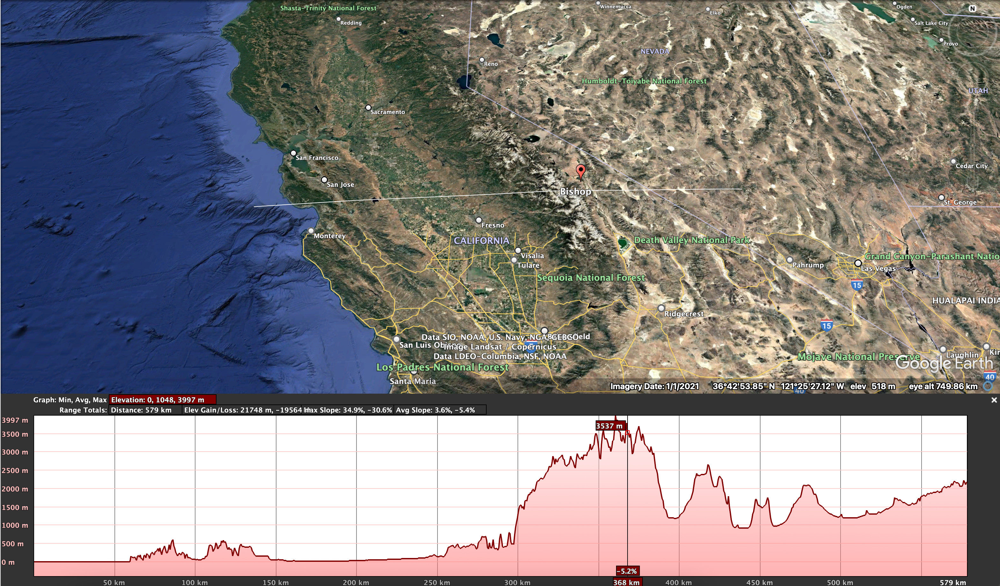

The late-build-up season in Darwin, NT, is a period of oppressive heat and humidity. The temperature only rises a few degrees, but the humidity skyrockets. It does not rain as often as the wet season, but afternoon thunderstorms are frequent:
List three atmospheric conditions that must be satisfied before any of these storms can produce precipitation.
For each condition, explain (≈ 2 sentences) why failure of that condition would prevent rainfall – even under high relative humidity.
Warm vs Mixed-Phase Clouds
Convective downpours over Singapore in March are dominated by warm-rain processes, whereas December snow-storms in the Scottish Highlands rely heavily on the Bergeron ice–crystal mechanism.
Identify the dominant droplet-growth mechanism operating in each region.
Describe how cloud-temperature structure and up-draught strength favour those mechanisms.
State one consequence for raindrop/snow-crystal size distribution at the ground in each case.
Sierra Nevada Transect
Fig. 1 shows a west-to-east cross-section across California’s San Jose from the Pacific coast to Bishop. On your copy of the figure, mark:
the zone of maximum orographic precipitation.
the rain-shadow region.

Sierra Nevada Transect on Google Earth
Annotate approximate temperature changes (°C) of a rising unsaturated parcel that moves:
sea-level to 3 000 m.
crest to Owens Valley floor. (Use the dry- and saturated-adiabatic lapse rates as appropriate.).
(Use your online resources for this:) name two rain-shadow communities east of the crest and discuss, in \approx 100 words, how this precipitation pattern shapes their water-supply strategies.
Two tipping-bucket rain gauges operated for 14 consecutive days (Day 1 – Day 14):
Forest-Gauge mounted 1 m above ground beneath a closed-canopy, mature forest.
Pasture-Gauge sited in an open cattle pasture 600 m away on level terrain.
Day
1
2
3
4
5
6
7
8
9
10
11
12
13
14
Σ 14-d
Pasture-Gauge (mm)
0
5
12
0
20
8
4
15
9
22
7
17
11
10
140 mm
Forest-Gauge (mm)
0
4
9
0
17
7
3
13
8
18
6
15
9
10
119 mm
Daily totals from the 14-day paired-gauge experiment.
Draw a paired bar chart comparing daily rainfall at the two gauges. The spreadsheet containing the data can be found here.
The Forest-Gauge shows a 15 % lower 14-day cumulative total than the Pasture-Gauge. Explain three plausible micro-site or measurement biases that could produce this difference.
For each bias, recommend one practical adjustment or field check that would reduce its impact in future campaigns.
Method Evaluation
A 2,500\ km^2 catchment in central Nepal has four long-term rain gauges, all below 1,800\ m\ asl. Snowfields begin at \approx 3,000 m and the crest reaches 5,000 m.
Select one of the following to estimate areal rainfall for monthly water-balance work:
Thiessen polygons
Hypsometric (altitude-belt) method
Justify your choice with reference to topography, gauge distribution, and expected precipitation gradients.
Suggest one supplementary data source/technology that could improve the estimate without installing new high-altitude gauges, and explain how you would integrate it.